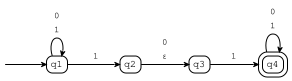
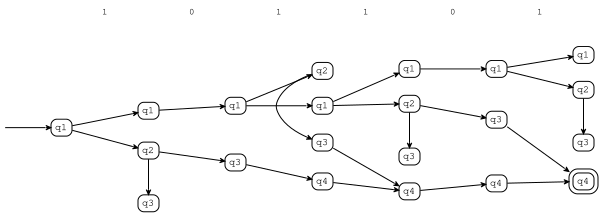
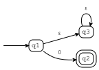
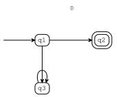

Nondeterministic finite automata¶
[1]:
from tock import *
Creating NFAs¶
NFAs are loaded and created similarly to DFAs:
[2]:
m = read_csv("examples/sipser-1-27.csv")
m.is_finite(), m.is_deterministic()
[2]:
(True, False)
[3]:
to_table(m)
[3]:
| ε | 0 | 1 | |
|---|---|---|---|
| >q1 | q1 | {q1,q2} | |
| q2 | q3 | q3 | |
| q3 | q4 | ||
| @q4 | q4 | q4 |
There are two main differences in this table from a DFA. First, a cell can have more than one state. For example, if the machine is in state q1 and the next input symbol is a 1, then the machine can change to either q1 or q2. Use curly braces for sets of states. (It’s an error to omit them.) If a cell has no states, either write {} or ∅ or leave the cell blank.
The second difference is that there is a column for the empty string, which can be written either as ε or &. (The ampersand is supposed to look like “et”, so I figured it would be a good approximation to ε, which is a Greek “e”.) If the machine is in state q2, then it can change to state q3 without reading in any input symbols.
This is what the state transition diagram looks like:
[4]:
to_graph(m)

Now it’s a little easier to see that this machine accepts strings that contain either 101 or 11.
Running NFAs¶
Let’s run the automaton on a string:
[5]:
run(m, "1 0 1 1 0 1")

Now the run graph is more interesting than for the DFA. As before, each node indicates a configuration, that is, a state that the machine can be in at a particular time. Nodes in the same column correspond to the same input position. An edge between two configurations means that the automaton can move from one to the other. Note that unlike in a DFA run, a node can have more than one outgoing edge. Since there is a path that ends with a double node, the machine accepted the string.
Previously, we used only_path() to display a sequence of configurations. That won’t work here, because there are many paths. Instead, we can use:
[6]:
run(m, '1 0 1 1 0 1').shortest_path()
[6]:
| q1 | [1] 0 1 1 0 1 |
| q1 | [0] 1 1 0 1 |
| q1 | [1] 1 0 1 |
| q1 | [1] 0 1 |
| q2 | [0] 1 |
| q3 | 1 |
| q4 | ε |
Here’s another string:
[7]:
run(m, "0 1 0 0 1 0")

The absence of a double node means that the string was rejected.
In a nondeterministic automaton, it’s possible that there are infinitely many runs for a given input string. That’s not a problem – consider the following NFA, which (for some reason) loops through a bunch of epsilon transitions before reading in a single 0.
[8]:
m = read_csv("examples/nfaloop.csv")
to_graph(m)

[9]:
run(m, "0")

This graph represents an infinite number of runs, each of which loops in state q1 for some number of times, then moves on to state q2.